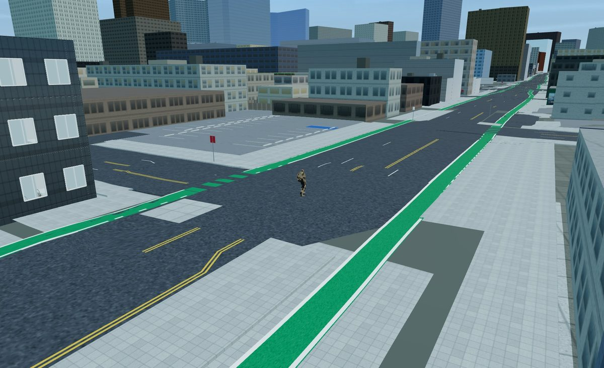
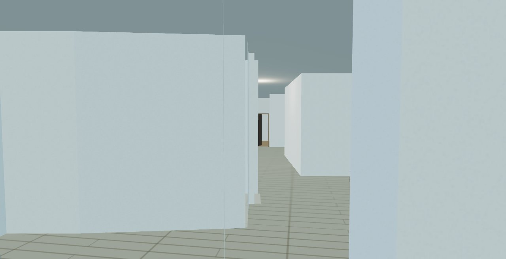
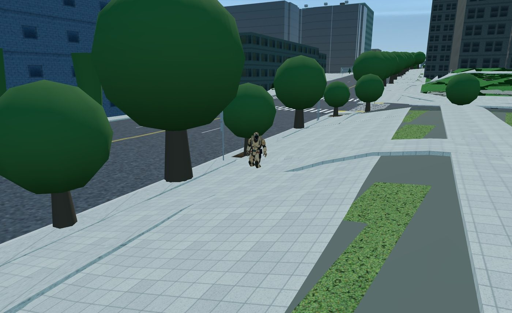

Streets as they're painted
Bike lanes, double yellows, crosswalks and stop bars follow the city's own cross-sections — solid where it's solid, dashed where it's dashed.
Measured · city & lidarSan Francisco · Oakland · Berkeley · Palo Alto · San Jose
Kerbside is a walkable 3D model of the streets — every crossing, kerb ramp, bike lane and front step, placed where the city measured it. Walk a block before you get there, or step through a door and look around.
Explore
Most maps stop at the centre line of the road. Kerbside keeps going: the width of the footway, the height of the kerb, which corners have ramps and where the paint says you can cross.

Bike lanes, double yellows, crosswalks and stop bars follow the city's own cross-sections — solid where it's solid, dashed where it's dashed.
Measured · city & lidar
Doors open and houses have rooms. Walk in and look around in first person, and see into the windows of the houses you pass. The rooms are a generic plan fitted to each house, and labelled as exactly that.
Illustrative interiors · labelledHills, building heights and kerb edges come from airborne lidar and city surveys, so a street climbs where it climbs and a tower stands as tall as it was measured. Where photographs agree, a building wears its own facade.
Measured · lidar & surveysFrom the skyline to the step
Fly over the bay, drop onto a street corner, follow a bike lane for a mile. The blocks around you load in full detail and the city beyond stays as its outlines, so it keeps up as you walk.
How it's built
Kerbside is assembled from public records and open data, layer by layer. What was measured is kept apart from what was inferred.
Kerb lines, kerb ramps, driveway cuts and kerb-side rules, from the cities' own surveys.
The shape of the hills, building heights, and the kerb edge where no survey reaches.
Lanes, crossings, footways, bike routes, doors and the buildings themselves.
Frames from Mapillary, KartaView and Panoramax, cross-checked before a wall is dressed.
Nothing invented is passed off as measured. A building height nobody recorded is drawn greyer, and an interior is a fitted stand-in unless it says otherwise. Borrowed scans are labelled as not being that address. Every gap we filled is marked as filled.

Help map it
The Kerbside app can photograph the pavement as you walk and turn those frames into kerb heights and footway widths. It does the judging on your phone, not on a server.
Coverage
Each area is built in full detail in the app. The note says what it's grounded in: city records, lidar or map data.
Loading coverage…
Get the app
No store, no account, no sign-up. Kerbside installs straight from your browser onto your home screen and opens like any other app; the areas you visit are kept on your device and it updates itself.
On a computer, Kerbside installs as a desktop app from Chrome, Edge or Safari.